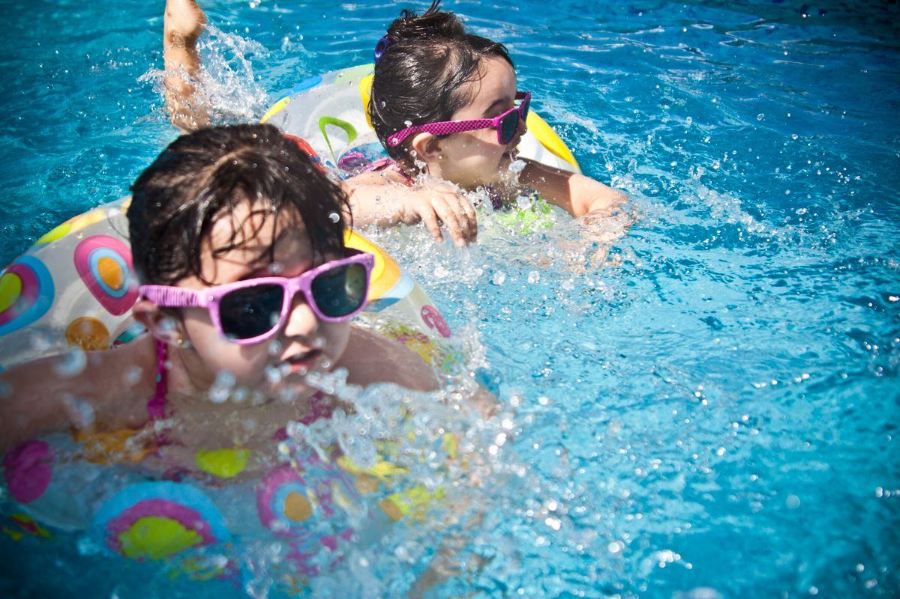

Prix & budget
Prix piscine coque, budget piscine 8x4, coût terrassement, prix rénovation liner, pompe à chaleur piscine.
Contenu SEO piscine
Générez des idées selon votre prestation, votre zone et la saison, puis utilisez-les pour alimenter votre site ou Wisewand.

Générateur
Bibliothèque de sujets
Prix piscine coque, budget piscine 8x4, coût terrassement, prix rénovation liner, pompe à chaleur piscine.
Piscine coque ou béton, piscine petit jardin, piscine semi-enterrée, piscine familiale, piscine sans entretien.
Déclaration préalable, distance voisinage, sécurité obligatoire, abri piscine, fiscalité et taxe d’aménagement.
Remise en route, hivernage, eau verte, pH, chlore, électrolyse au sel, robot piscine, filtration.
Changer liner, fuite piscine, rénovation margelles, moderniser filtration, rénover plage piscine, volet roulant.
Pisciniste + ville, construction piscine + département, entretien piscine + zone, rénovation piscine + région.
Piscine coque vs béton, chlore vs sel, liner vs membrane armée, robot hydraulique vs électrique.
Eau trouble, pompe qui ne démarre plus, fuite, liner plissé, skimmer cassé, pression filtre élevée.
Chaque article doit finir par une passerelle : audit, visite terrain, estimation, appel ou formulaire de projet.
Instruction Wisewand
Mode conseillé : Advanced Mode Mot-clé principal : [insérer le sujet] Cible : particulier propriétaire de maison qui prépare un projet piscine, rénovation ou entretien. Objectif : informer, rassurer et orienter vers une demande de devis sans promesse excessive. Ton : professionnel, clair, local, concret. Structure : introduction courte, critères de choix, erreurs à éviter, exemples de situations, FAQ, conclusion avec CTA doux. Contraintes : intégrer la zone d’intervention [ville/département], proposer des liens internes vers pages services, éviter les affirmations non vérifiées sur les prix, ne pas promettre un résultat garanti.
Production de contenus SEO
Commencez avec les idées et les plans de ce site, puis utilisez un outil comme Wisewand pour produire des articles structurés plus vite, avec une vraie logique SEO.
Lien potentiellement affilié. Le SEO ne garantit jamais une position : les résultats dépendent de votre zone, de votre concurrence, de vos avis, de votre site et de la régularité de publication.